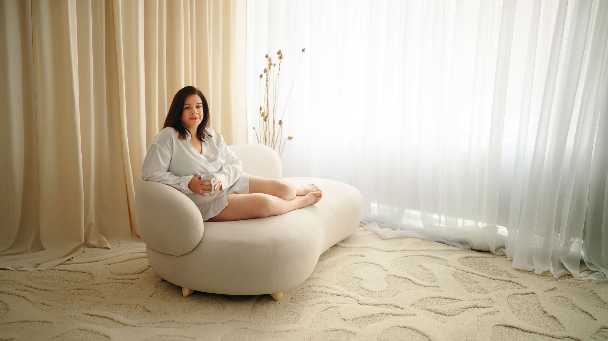

Frauenfotografie in Karlsruhe & Walzbachtal
Portraits von Frauen – ehrlich, stark, sinnlich & authentisch
Willkommen bei Anna Duleba Photography – Deiner Fotografin für Frauenfotografie in Karlsruhe, Walzbachtal und Umgebung. Meine Portraits von Frauen sind mehr als nur schöne Bilder: Sie sind eine Einladung, Dich selbst zu sehen – mit all Deiner Stärke, Zartheit, Geschichte und Tiefe.
Ob Du mitten im Leben stehst, gerade Mama geworden bist, einen neuen beruflichen Weg gehst oder einfach Bilder für Dich selbst möchtest: In meinen Frauen-Shootings entsteht eine Galerie, die zeigt, wer Du bist – nicht wer Du sein „solltest“. Feinfühlige Führung, liebevolle Atmosphäre und professionelle Lichtstimmung sorgen dafür, dass Du Dich vor der Kamera sicher, gesehen und schön fühlst.
Warum Frauen ein Portrait-Shooting bei mir buchen
Jedes Shooting wird individuell geplant – mit viel Ruhe, Herz und Erfahrung. Besonders wichtig sind mir:
- Authentische Emotionen – keine starren Posen, sondern lebendige, ehrliche Momente.
- Entspannte Atmosphäre – Zeit zum Ankommen, Durchatmen, Lachen, vielleicht auch zum Loslassen.
- Vorteilhafte Lichtführung – Licht, das Deine Konturen schmeichelnd betont und Deinen Ausdruck trägt.
- Behutsame Anleitung – ich zeige Dir, wie Du stehen, sitzen oder Dich bewegen kannst, ohne Dich zu verstellen.
- Respektvolle, wertschätzende Begleitung – Dein Körper, Deine Grenzen, Dein Tempo.
Drei Bildwelten in einem Shooting
In meinen Frauen-Shootings verbinde ich unterschiedliche Bildstile, damit eine vielseitige, stimmige Galerie entsteht:
- Feine Lifestyle-Portraits – weich, natürlich, zeitlos. Bilder, die Dich so zeigen, wie Du im Alltag bist – lachend, nachdenklich, ganz bei Dir.
- Studio-Portraits mit Tiefgang – klare Lichtsetzung, ruhiger Hintergrund, Fokus auf Ausstrahlung und Mimik. Ideal für Frauen, die ausdrucksstarke Portraits möchten, die sie über Jahre begleiten.
- Moderne, künstlerische Frauenfotografie – mutige Farben, kreative Lichtstimmungen, Fine-Art-Elemente. Für alle, die Lust haben, mit Stil, Glamour und einem Hauch „Magie“ zu spielen.
Du kannst Dich auf einen Stil konzentrieren oder alles kombinieren – wir gestalten das Shooting so, dass es sich zu Deiner Persönlichkeit und Deiner Geschichte passend anfühlt.
Wie läuft ein Frauen-Shooting ab?
- Vorgespräch – wir klären Deine Wünsche, Deinen Stil und wofür Du die Bilder nutzen möchtest.
- Outfit- & Stylingtipps – Du bekommst Empfehlungen zu Kleidung, Farben und Accessoires.
- Shooting im Studio oder Outdoor – in meinem Studio in Pfinztal oder in der Natur rund um Karlsruhe.
- Gemeinsame Bildauswahl – Du wählst Deine Lieblingsbilder in einer passwortgeschützten Online-Galerie.
- Feinbearbeitung – professionelle Retusche in meinem typischen, natürlichen Bildstil.
Meine Retusche ist dezent und respektvoll: kleine Störungen dürfen verschwinden, Deine Persönlichkeit bleibt. Ziel ist nicht Perfektion, sondern ein Bild, in dem Du Dich wiedererkennst und magst.
Für welche Frauen ist dieses Shooting gedacht?
Ein Frauen-Shooting in Karlsruhe ist perfekt für Dich, wenn Du:
- Bilder nur für Dich selbst möchtest – als Erinnerung an eine besondere Lebensphase.
- Deine weibliche Kraft sichtbar machen willst, unabhängig von Kleidergröße oder Alter.
- aktuelle, stimmige Bilder für Website, Social Media oder Business brauchst.
- nach einer Schwangerschaft oder einem Neustart im Leben wieder bei Dir ankommen möchtest.
- Dir einfach einmal etwas Schönes gönnen willst – Zeit nur für Dich, mit Bildern, die bleiben.
Pakete & Preise
Eine Übersicht über meine Angebote für Frauenfotografie findest Du hier:
Lust auf Dein eigenes Frauen-Shooting?
Erzähle mir gerne ein wenig über Dich und Deine Wünsche. Gemeinsam gestalten wir ein Shooting, das Deine Geschichte mit Herz, Licht und viel Feingefühl erzählt.